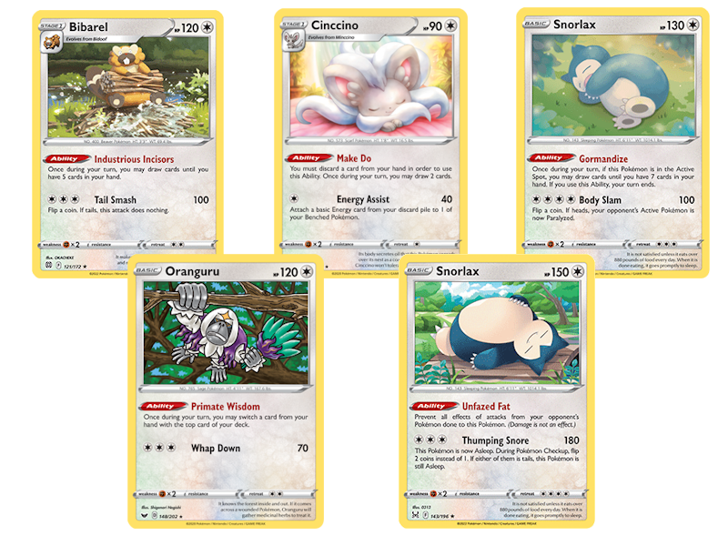
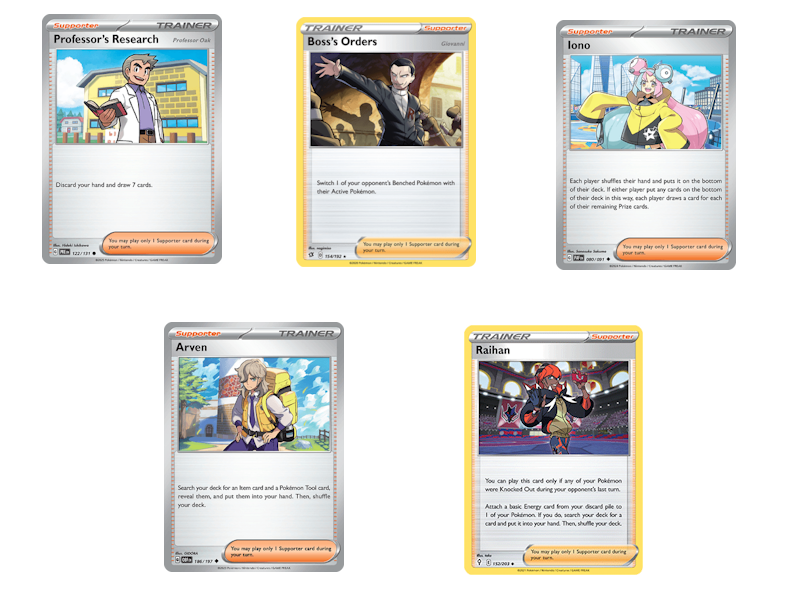

Notable Cards
Some players may worry that players will default to "the best" card of each type, leading to a stagnant meta. However, you'll find that every type has both powerful attackers and useful utility Abilities.
Colorless
Colorless Pokémon are the most in-demand type out there. Colorless attackers can slot into any deck out there, and the type is home to several useful draw effects.
Bibarel, Cinccino, and Snorlax all offer powerful draw effects for any deck. Bibarel provides protection against hand disruption like Iono, and can safely set up behind Bidoof's Carefree Countenance. Cinccino's Trade is a staple consistency booster that can help fuel the discard pile for cards like Dark Patch, while Minccino's Call for Family makes finding your Basic Pokémon a breeze. Gormandize Snorlax offers a much bulkier alternative to Cleffa, and running it opens the door to running a copy of Thumping Snore Snorlax, capable of KOing just about anything for 3 Energy. Finally, while Oranguru may seem to pale in comparison to the other draw options, it provides key synergy with Emergency Entry, Slowking, Nugget, and more.
Water
Radiant Greninja was incredibly powerful durings its stay in the Standard format. You may fear such a card would dominate a lower-power format, but giving up all other Water Pokémon is a real cost!

Manaphy is one of the premier counters to opposing Radiant Greninja, preventing the 90 damage snipe from devastating the board. And since you only need 1 bench barrier, there's a free slot for Ocean Search Manaphy to boost your consistency. If you're trying to attack with Water types, though, Feraligatr has a monster 280 damage cap, as well as access to hit-and-run and retreat lock when paired with Memory Capsule or Relicanth. Seaking offers the best of both worlds: damage and card draw. Pair it with Leon and Vitality Band to deal 200 damage and draw 4 cards.
Fighting
The fighting type is all about efficient, high damage attacks, but a few tricky effects are also in their lineup.
Hisuian Arcanine has access to multiple powerful 0 energy attacks; Gengar and Dodrio can place damage counters on themselves, while Galarian Meowth can help empty your hand. Okidogi has over 200HP and a 170 damage attack when paired with a Rainbow Energy, while Machamp can hit the 300HP threshold. Donphan deals solid damage while setting up attackers like Talonflame or Moltres. Lucario presents an ever-growing threat on the bench, able to power itself up over time by accelerating energy straight from the deck. In terms of support, Sandshrew and Toedscruel turn off the opponent's ability to recycle cards, while Drillbur sets up energy in the discard for Morpeko's Pick and Stck or Porygon-Z's Buggy Turbo. Hawlucha provides additional chip damage and pairs perfectly with Scoop Up Net, while Relicanth can enable Feraligatr to use Big Bite and Reverse Thrust.
Psychic
Cleffa provides an early-game burst of card draw, while Kirlia's Refinement ability provides consistent cards throughout the game. If you're running Psychic energy, Xatu provides Kirlia's draw on top of acceleration, while Malamar exchanges the card draw for acceleration from the Discard pile. Dusknoir may give up a prize card, but can take out key engine pieces from the opponent's board or combine with your attack for turn to remove 2 threats at once.
Darkness
With Zoroark's Phantom Transformation, any deck can gain access to 2 more copies of their Stage 1 attackers, a huge boon for consistency. But if you'd rather just draw cards, Liepard offers the same Ability as Cinccino and Kirlia. Stack all 3 to utilize attackers like Revavroom and Barbaracle! But if you don't need help drawing, Ariados' Spider Net can gust up any Evolution Pokémon. Obstagoon will stop any Big Basic deck in its tracks, while Hydreigon's Dark Squall can set up the effects of Munkidori and Cacturne.
Grass
Budew offers a quick method of item locking your opponent. With only 2 copies of each card in the deck, item locks make it even more difficult to find the perfect setup. Shaymin is a brand-new printing of Bench Barrier; it won't protect your Rule Box Pokémon, but in this format, there aren't very many around! Eldegoss can search out Energy each turn, while its pre-evo Gossifleur has a 3 Pokémon Call For Family! If you'd rather accelerate energy, Rillaboom attaches 2 directly from the deck as a Stage 2, while Cherrim can attach any number from hand as a Stage 1. Weepinbell's status conditions pair perfectly with Super Fang attackers and can trigger multiple times with Scoop Up Net. Jumpluff is an ultra threatening attacker when paired with damage buffs, can enter play quickly thanks to Skiploom's ability, and can set up your board instantly with a double Technical Machine Evolution. Radiant Venusaur keeps your deck flowing when you need a low hand size for cards like Hisuian Arcanine and Cassieopia.
Metal
Metal Maker Metang can accelerate Energy to any type of Pokémon. Keep it on the field by utilizing Metagross's Emergency Entry to dodge evolution entirely! Revaroom offers draw support while setting up Energy in the discard for Raihan or other effects. Galarian Meowth may seem odd, but emptying your hand can be crucial to utilize Hisuian Arcanine, Empoleon, and Cassieopia. Control decks will love Mawile's ability to discard energy, and Scoop Up Net makes it usable multiple times in a single turn!
Fire
Libero Cinderace can blaze a trail through your opponent's board thanks to its Libero Ability turning Flare Striker into a 1 attachment, 190 damage attack. But if that's too many energy, place 8 Stadium cards in the discard pile to use Castform's High-Pressure Blast for a free 150 damage.
Lightning
Flaaffy's Dynamotor isn't limited to just Lightning type Pokémon! It may not accelerate energy as quickly as Cherrim, but Flaaffy works great for any decks with 2-3 energy attack costs. Ampharos is no slouch when it comes to damage, either. If you need a quick burst of Energy, though, Joltik can grab 4 of them right from the deck! Yamper combos with Scoop Up Net to repeatedly search out Pokémon from the deck, or maybe you'd rather set up your discard pile with Snack Seek Morpeko. If you're looking to attack, Pawmot and Raichu have abilities to power themselves up from the bench.
Dragon
Dragon Type Pokémon are full of useful abilities! Drakloak takes the cake for generic consistency, but Tatsugiri and Altaria provide ways to access powerful Supporter cards. And if too many decks start running Colress' Experiment or Colress' Tenacity, Kyurem becomes a devastating attacker! If you're willing to commit to the dual-typed energy costs, Drampa and Haxorus offer incredible damage output, while Flapple and Appletun provide powerful attacks for a single colorless energy.
Trainers
Trainers provide the consistency essential to make any deck work. Just like in any other format, certain Supporters and Items will be found in nearly every deck.Supporters
Much like in Standard, Professor's Research, Iono, and Boss's Orders find their way into many decks. If you're running multiple Stage 2 Pokémon, however, shuffle draw effects like Marnie and Bruno may be your best bet. Arven can find a variety of powerful ACE SPECs, while Klara can get your Knocked Out Pokémon back in action. If your deck has multiple good attackers, Raihan lets you stream them seamlessly. If your deck has a main attacker, also consider type-specific Supporters like Piers or Irida!
Items
If it has "Ball" in the name, there's a strong case for putting it in your deck. And what's better than 1 Ball? 2! Buddy Buddy Poffin is fantastic, and Battle VIP Pass can work with a bit of gumption (aka running Arven and other cards to search it out). With only 2 copies of each Pokémon, Night Stretcher is a well-welcomed method to recycle them. Switch is a surefire way to get out of the active, but Scoop Up Net can take a damaged Pokémon off the board and allow you to reuse on-entry abilities.
Tools
Most tool cards will depend on the deck you're running, but TM Evolution has value in any deck utilizing Stage 1 or Stage 2 Pokémon (read: almost all of them). Air Balloon can turn any Pokémon into an effective pivot, and generic effects like Defiance Band's damage boost or EXP Share's energy transfer are always worth considering.
Stadium
Most Stadium cards are intended to boost specific strategies, but Artazon helps every deck get set up. Basic-focused decks may want Beach Court or Lively Stadium, while control strategies may benefit from Temple of Sinnoh or Galar Mine.